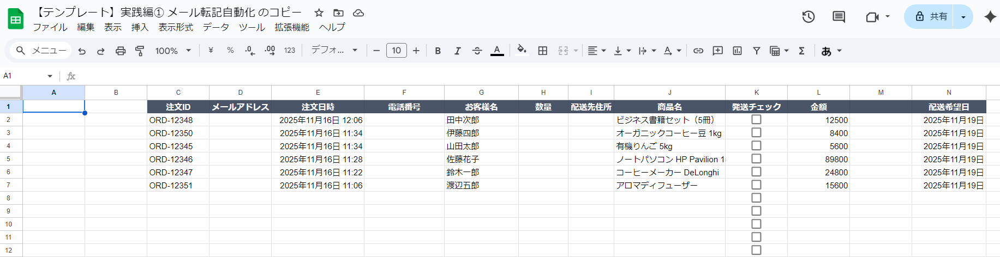
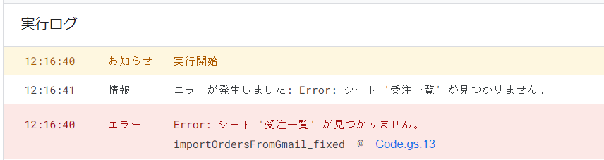

動作確認
承認が完了したら、実際にツールが正しく動作するか確認しましょう
初回承認が完了したら、次は実際にツールが正しく動作するか確認します。 この動作確認では、メールが正しく検索されているか、スプレッドシートに正しく転記されているか、 重複チェックが機能しているかなどをチェックしていきます。
もしエラーが出た場合でも、落ち着いてエラーメッセージを確認しましょう。 エラーメッセージをChatGPTに送れば、修正方法を教えてくれます。
📧 動作確認用のサンプルメールを送信
動作確認をスムーズに行うために、ここでサンプルメールを再度送信できます。
承認が完了したら、このボタンでサンプルメールを送信して、ツールが正しく動作するか確認してみましょう。
🔒 個人情報の取り扱いについて
こちらで入力いただいたメールアドレスは、サンプルメールの送信のみに使用いたします。 それ以外の目的で使用することは一切ありませんので、ご安心ください。
サンプルメールを送信
💡 動作確認の流れ
サンプルメールを送信したら、すぐにGASツールを実行して、メールが正しく転記されるか確認してみましょう。
送信するたびに異なる商品パターン（7種類）のメールが届きますので、様々なデータで動作確認ができます。 何度でも送信できますので、動作確認用にお使いください。
⚠️ 注意： メールが迷惑メールフォルダに振り分けられる可能性があります。 届かない場合は、迷惑メールフォルダもご確認ください。
確認ポイント
メールが正しく検索されているか
まず、ツールが意図したメールを正しく検索できているか確認しましょう。
✅ 確認方法
スクリプトエディタの画面下部にある「実行ログ」を確認します。 ログには、以下のような情報が表示されているはずです：
検索条件: subject:注文
検索結果: 5件のメールが見つかりました
⚠️ メールが検索されない場合
もし「0件のメールが見つかりました」と表示される場合は、以下を確認してください：
- 検索キーワード（例：「注文」）が正しいか
- 実際にそのキーワードを含むメールがGmailに存在するか
- 検索条件が厳しすぎないか（例：日付範囲が狭すぎるなど）
スプレッドシートに正しく転記されているか
次に、Googleスプレッドシートを開いて、メールの内容が正しく転記されているか確認します。
✅ チェック項目
-
✓
C列：注文ID
注文IDが正しく抽出されているか（例：ORD-12346）
-
✓
E列：注文日時
注文日時が入力されているか（例：2025/11/16 14:30）
-
✓
G列：お客様名
お客様名が正しく入力されているか（例：佐藤花子）
-
✓
J列：商品名
商品名が入力されているか（例：ノートパソコン HP Pavilion 15）
-
✓
H列：数量
数量が入力されているか（例：1台）
-
✓
L列：金額
金額が数値で入力されているか（例：89800 ※カンマ・円記号除去）
-
✓
N列：配送希望日
配送希望日が入力されているか（例：2025/11/19）

📸 クリックして拡大表示
重複チェックが機能しているか
同じメールが重複して転記されないように、重複チェック機能が正しく動作しているか確認します。
✅ テスト方法
もう一度、同じ関数を実行してみましょう。 重複チェックが機能していれば、以下のようになるはずです：
- 2回目の実行では、新しいメールだけが追加される
- すでに転記されたメールは、再度転記されない
- ログに「重複をスキップしました」といったメッセージが表示される
金額が正しく数値化されているか
最後に、L列の金額が数値として正しく変換されているか確認します。 メール本文では「89,800円」のように書かれていますが、 スプレッドシートには「89800」と数値のみで入力されているはずです。
💡 金額の数値化について
金額をカンマや円記号を除いた数値にすることで、 スプレッドシートで計算や集計ができるようになります。
例えば、SUM関数を使って合計金額を計算したり、 条件付き書式で一定金額以上の注文をハイライトしたりできます。
もしエラーが出たら
エラーが出た場合でも、慌てる必要はありません。 エラーメッセージを確認して、ChatGPTに送れば、修正方法を教えてくれます。
🚨 よくあるエラー例
-
「Exception: Service invoked too many times」
→ GASの実行回数制限に達しました。少し時間を置いてから再実行してください。
-
「ReferenceError: シート名 is not defined」
→ スプレッドシートのシート名がコードと一致していません。シート名を確認してください。
-
「TypeError: Cannot read property」
→ コードの一部に誤りがある可能性があります。エラーメッセージをChatGPTに送って修正を依頼しましょう。
💬 ChatGPTへの質問例
以下のエラーが出ました。修正してください。
[エラーメッセージをここに貼り付け]
エラーメッセージをコピーして、このようにChatGPTに送ると、 原因と修正方法を教えてくれます。

📸 クリックして拡大表示
トラブルシューティング
❓ データが転記されない
- 検索キーワードが正しいか確認
- Gmailに該当するメールが存在するか確認
- スプレッドシートのシート名が正しいか確認
- 実行ログにエラーメッセージが表示されていないか確認
❓ 日付フォーマットがおかしい
日付が期待通りの形式（YYYY/MM/DD）で表示されない場合、 スプレッドシートの列を選択して、表示形式を変更してみてください。
変更方法：列を選択 → 表示形式 → 数字 → 日付
❓ 注文情報が正しく抽出されない
注文ID、お客様名、商品名などの情報が正しく抽出されない場合、 メールのフォーマットとプロンプトの指示内容が合っていない可能性があります。
この場合は、ChatGPTに実際のメール本文とエラー内容を送って、 「メールから注文情報を正しく抽出できません。修正してください」と質問しましょう。